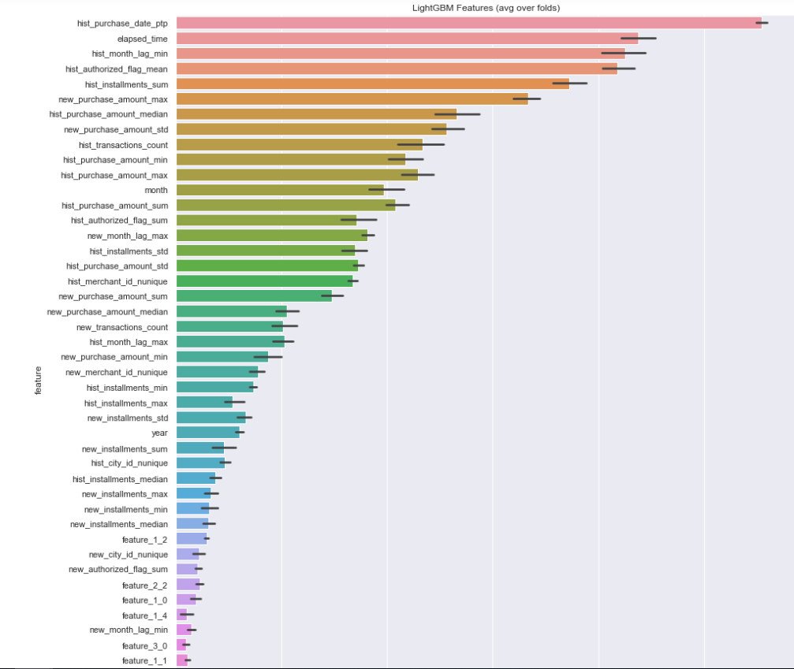

MODEL
In this project I have used three algorithms that is Light GBM, XG Boost and Neural network.
Light GBM and XG Boost are fast, distributed, high-performance gradient boosting framework based on decision
tree algorithm, used for ranking, classification and many other machine learning tasks.
Advantages of Light GBM and XG Boost are:
1. Faster training speed and higher efficiency: Use histogram-based algorithm i.e it buckets continuous feature values into discrete bins which fasten the training procedure.
2. Lower memory usage: Replaces continuous values to discrete bins which result in lower memory usage.
3. Better accuracy than any other boosting algorithm: It produces much more complex trees by following leaf wise split approach rather than a level-wise approach which is the main factor in achieving higher accuracy.
4. Compatibility with Large Datasets: It is capable of performing equally good with large datasets with a significant reduction in training time.
Advantages of Light GBM and XG Boost are:
1. Faster training speed and higher efficiency: Use histogram-based algorithm i.e it buckets continuous feature values into discrete bins which fasten the training procedure.
2. Lower memory usage: Replaces continuous values to discrete bins which result in lower memory usage.
3. Better accuracy than any other boosting algorithm: It produces much more complex trees by following leaf wise split approach rather than a level-wise approach which is the main factor in achieving higher accuracy.
4. Compatibility with Large Datasets: It is capable of performing equally good with large datasets with a significant reduction in training time.
The modeling was done using Light GBM, XG Boost and multilayer perceptron to predict the customer loyalty scores. The ensemble learning methodology where 50% predictions of LGB and another 50% predictions of XGB were used.
For multilayer perceptron, fully connected layers were build using activation function
relu and Adam Optimizer was used. The purpose of optimization is to move towards
weight and bias parameters that minimizes the loss function. Optimization calculates
gradient descent and discovers the direction of steepest descent towards the minimum of
the loss function along which to update the weight vector. The Adam optimizer was used
for all networks. The last step was to conclude the results based on the model’s performance.
Below histogram shows the important features listed by the model Light GBM.
